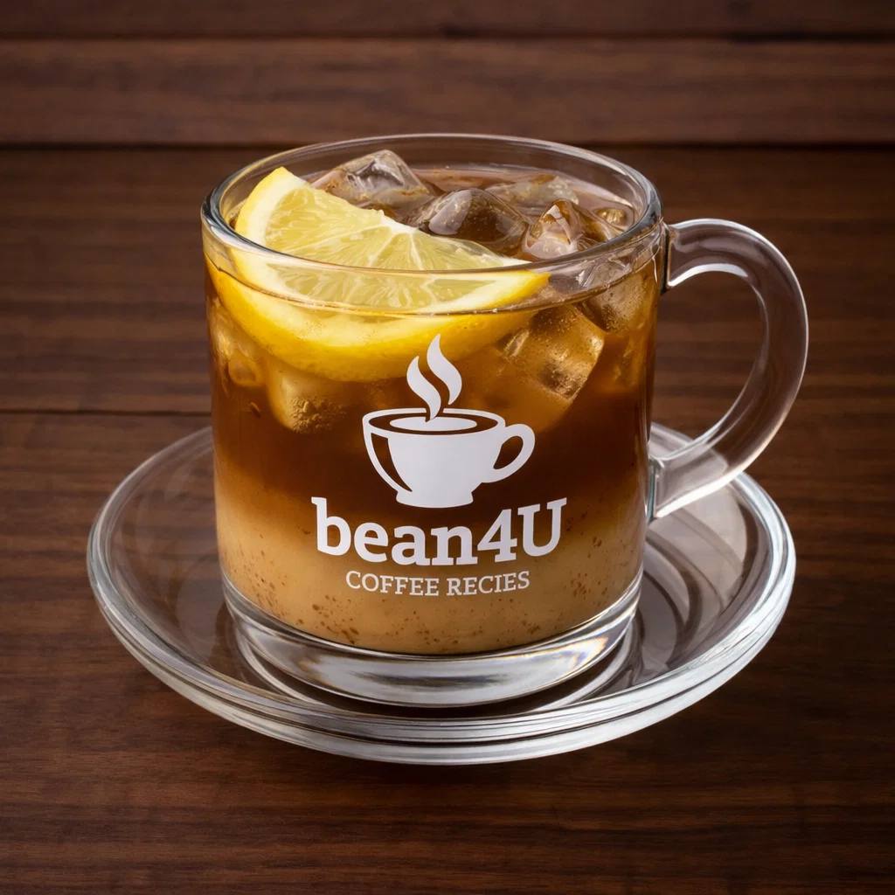

Café del Tiempo

Ingredients
- 1 espresso shot
- Equal volume of hot water (or hot milk to taste)
- Optional: lemon peel or sugar
Preparation
- Prepare espresso and dilute with hot water to create a balanced, mellow drink.
- Adjust with milk or sweetener if desired; traditionally a comforting combination.
- Serve hot.
- youtube short quickly explaining it:
- short Explanation
Video from @latinbrews
Channel